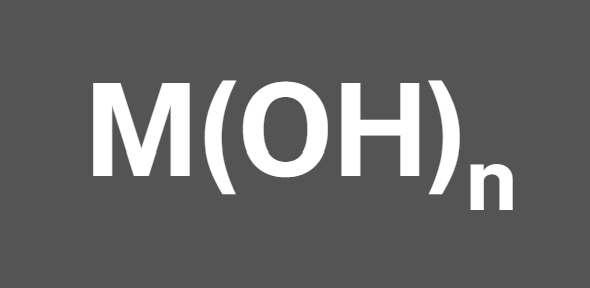
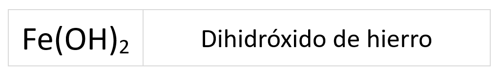
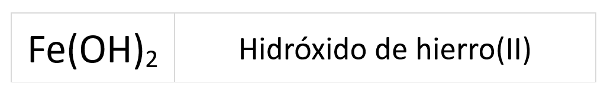
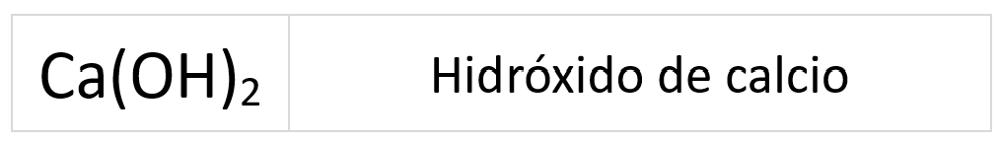
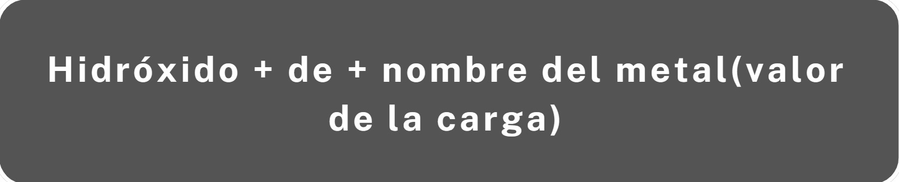
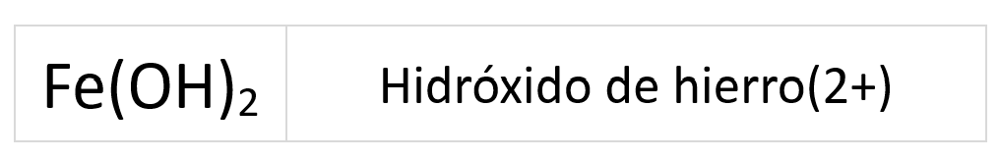

Los hidróxidos son compuestos ternarios (formados por tres elementos O, H y metal), pero su nomenclatura sigue las mismas pautas que la de los compuestos binarios, ya que pueden considerarse como la combinación del ion hidróxido (OH-) con los metales.
La fórmula general es

Para formular:
- Se coloca a la izquierda el símbolo del metal y a la derecha el grupo hidróxido.
- El ion hidróxido OH- actúa con carga -1 y el metal con estado de oxidación positivo.
- Se intercambian los estados de oxidación de los elementos en forma de subíndice, prescindiendo del signo.
- Se utilizan paréntesis para los subíndices del grupo hidróxido (excepto para el uno)
- Se tiene que cumplir la regla de la suma cero: “La suma algebraica de los estados de oxidación siempre debe dar cero”.
Para nombrar
Los hidróxidos se nombran utilizando la nomenclatura de composición y dentro de esta podemos nombrar de tres formas diferentes: prefijos multiplicadores, número de oxidación y valor de la carga.
Prefijos multiplicadores
En esta nomenclatura se utilizan los prefijos multiplicadores para indicar el número de grupos hidróxido.
Se sigue el siguiente esquema:
Ejemplo:

El prefijo -mono se omite normalmente.
Número de oxidación
En esta nomenclatura el número de oxidación del metal se indica con números romanos entre paréntesis.
Para nombrar utilizando el número de oxidación se sigue el esquema:
Ejemplo:

Si el metal tiene un estado de oxidación que se sobreentiende, no es necesario especificarlo con números romanos entre paréntesis.

El calcio solo tiene el estado de oxidación +2, por lo que no da lugar a duda y por ello no se especifica en el nombre.
Valor de la carga (n o lo veremos este curso)
Esta nomenclatura solo puede ser usada en compuestos iónicos, los formados con el grupo hidróxido y un metal. En esta nomenclatura el estado de oxidación se indica con el valor de la carga entre paréntesis.
Se nombran según el siguiente esquema:

Ejemplo:

Si el metal tiene un estado de oxidación que se sobreentiende, no es necesario especificarlo con el valor de la carga entre paréntesis.
El calcio solo tiene el estado de oxidación +2, por lo que no da lugar a duda y por ello no se especifica en el nombre.